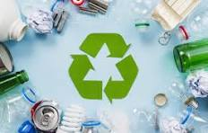
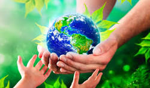

Nossos projetos buscam promover a sustentabilidade em diversas áreas, combinando inovação, educação e ação prática. Trabalhamos para gerar impacto positivo no meio ambiente e na sociedade, incentivando hábitos conscientes e soluções duradouras.
Projetos em Destaque
Reciclagem Comunitária: Programas de coleta e reciclagem de resíduos, envolvendo escolas e comunidades locais.

Educação Ambiental: Oficinas, palestras e materiais educativos para conscientizar sobre o consumo responsável e preservação dos recursos naturais.

Energia Renovável: Incentivo à adoção de soluções de energia limpa, como painéis solares em prédios públicos e privados.